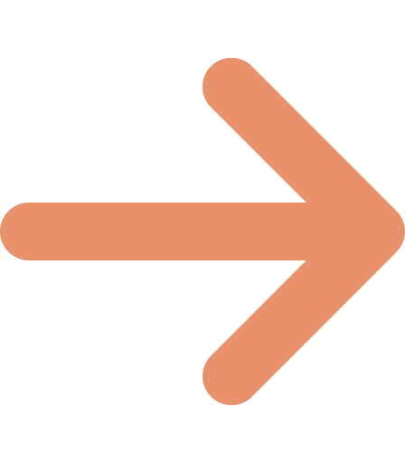

Completa este breve formulario y descubre cómo la IA Mistral diseñaría tu plan nutricional en segundos.
¿No sabes si tus niveles están en un rango seguro? Revisarlo y entiende en qué momento debes actuar.
Nota: este es solo un ejemplo de cómo se vería esta herramienta dentro de tu menú de usuario.
Ver niveles de Glucosa
Usa la herramienta las veces que quieras. Sin registro, sin costos, sin límites.
Volver al inicio